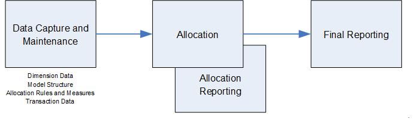

Cost Allocation consists of three parts Data Capture, Allocation and Allocation Reporting and Final Reporting.
FCASS provides a simple Data Capture component (FCASSE editing) and Allocation and Allocation Reporting (FCASSA).

Data Capture and Maintenance
The cost allocation solution has four different types of data to be captured or maintained
a. Dimension data – e.g. Product Hierarchy, Customer Hierarchy, Cost/Profit Centre Hierarchy, General Ledger Account Hierarchy, Resource Hierarchy, Activity Hierarchy, Location Hierarchy
b. Model Structure – i.e. Stages, Cost Pool Groups, Cost Pools, selection rules
c. Allocation Rules and Measures – i.e. Allocation Base, Measure Data e.g. number of returns of product
d. Transaction data – Financial transactions recorded against dimensions
This function is performed by program FCASSE (FCASS Edit).
Allocation and Allocation Reporting
Using data captured and provided as files, the Cost Allocation and Allocation Reporting sub system runs the cost allocation model and also allocation reports. The allocation reports are used to confirm that the allocation has run successfully and include reports that can show the traceability of the allocation.
This function is performed by program FCASSA (FCASS Allocation).
Final Reporting
Final Reporting takes the results of the allocation and produces reports in required presentation formats which may include graphics and online drill down capability for management reporting.
FCASS does not provide a solution for this. A cheap solution may be to use an end user reporting solution such as Excel (perhaps with Powerpivot) which uses as input CSV files created by the allocation reports.
| Report Number | Name | Description |
|---|
| Job Report | shows progress of run |
| 11 | Dimension Report | shows all of the records in a dimension with the value of the financial transactions that were selected by that dimension |
| 12 | Stage Report | shows the Stages in a Model with their associated Cost Pool Groups and Cost Pools |
| 13 | Cost Pool Resolution Report | shows Input Cost Pool Groups with their associated Cost Pools and the order that selection of a financial transactions would occur. It includes the number of financial transactions selected and the value |
| 14 | Cost Measures Report | shows all of the Measures (Named Measures and Internally Generated Measures). For Internally Generated Measures it shows the value of each selection |
| 15 | Cost Pool Report | shows selected Cost Pools. Can also select reporting of the Value Cube associated with each Cost Pool, Allocation Base used and where the Cost Pool has been used |
| 16 | Allocation Base Report | shows the Allocation Bases |
| 21 | Cost Pool Input Contribution Report | shows selected Input Cost Pools and what value they distributed to each Final Cost Pool |
| 22 | Cost Pool Final Contribution Report | shows selected Final Cost Pools and value they received from each Input Cost Pool |
| 23 | Trace Forward Report | shows the allocation traced forward from selected Cost Pools through Allocation Bases and Cost Pools to Final Cost Pools |
| 24 | Trace Back Report | shows the allocation traced backward from selected Cost Pools through Allocation Bases and Cost Pools to Input Cost Pools |
| 25 | Cost Pool Variance Report | shows selected Cost Pools with their variances |
| 26 | Rollup Report | shows a rollup by up to 3 dimensions of selected Value Cubes for a selected number of levels in each selected dimension |
| 31 | Cost Pool Value Cube Analysis | shows a list of Cost Pools and information on the size of their Value Cubes |
| 32 | Extract Selected Transactions | shows the output from Extract Transactions (report requested by OO 5) filtered by a specific Cost Pool code |
| 33 | Extract Value Cubes | shows an extract of the Value Cube for selected Cost Pools. Note this will be very big. |
| 34 | Extract Dimensions | shows an extract of Dimensions. Can be useful to gain hierarchy. |
| OO,5 | Extract Transactions | will produce an extract of transactions with the CP code they have been selected into. |